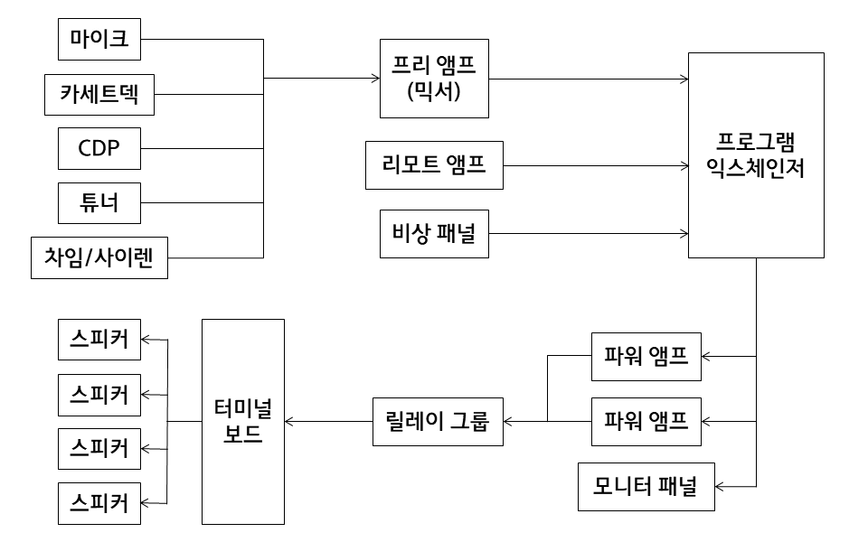

PA(Public Address) 방송 (전관방송)
정의
다수의 사람에게 어떤 정보를 알려주기 위해 소리를 이용하는 방송. 구성은 다음과 같다.
구성
입력단: 말소리 전달을 위한 마이크, 주의를 환기시키기 위한 사이렌 및 차임, 라디오 방송을 위한 튜너 등.
믹서: 사용하고자 하는 소스 기기의 종류에 따라 입력 채널 수를 결정.
출력단: 스피커, 앰프. 넓은 곳에 분산적으로 배치. 존(Zone)을 구성해 특정 존에만 전송되도록 설계하는 방법도 있음.
구성도

관련 링크
inter-M 조달정보